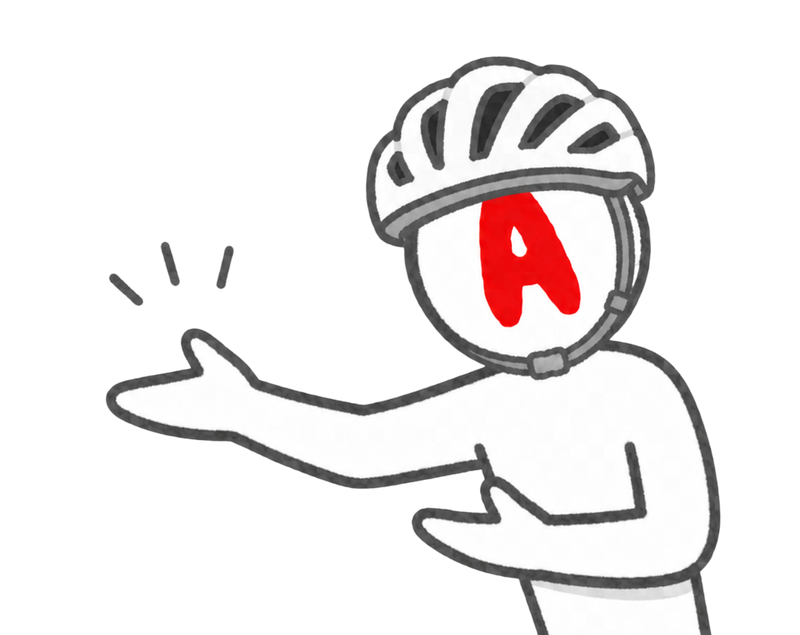
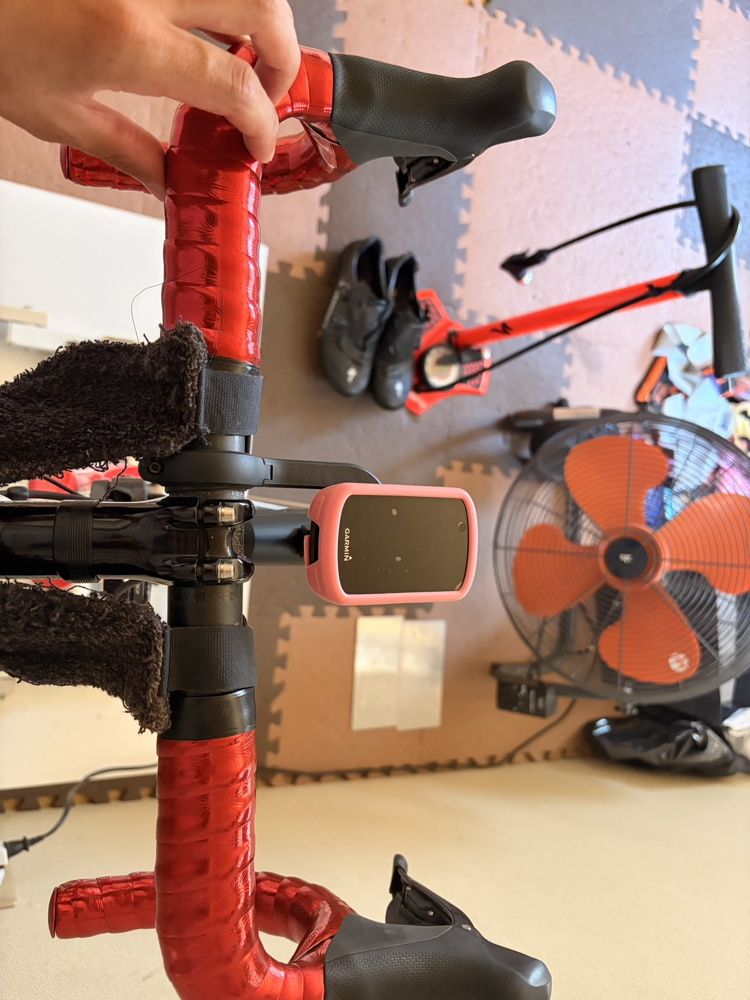
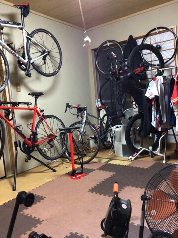
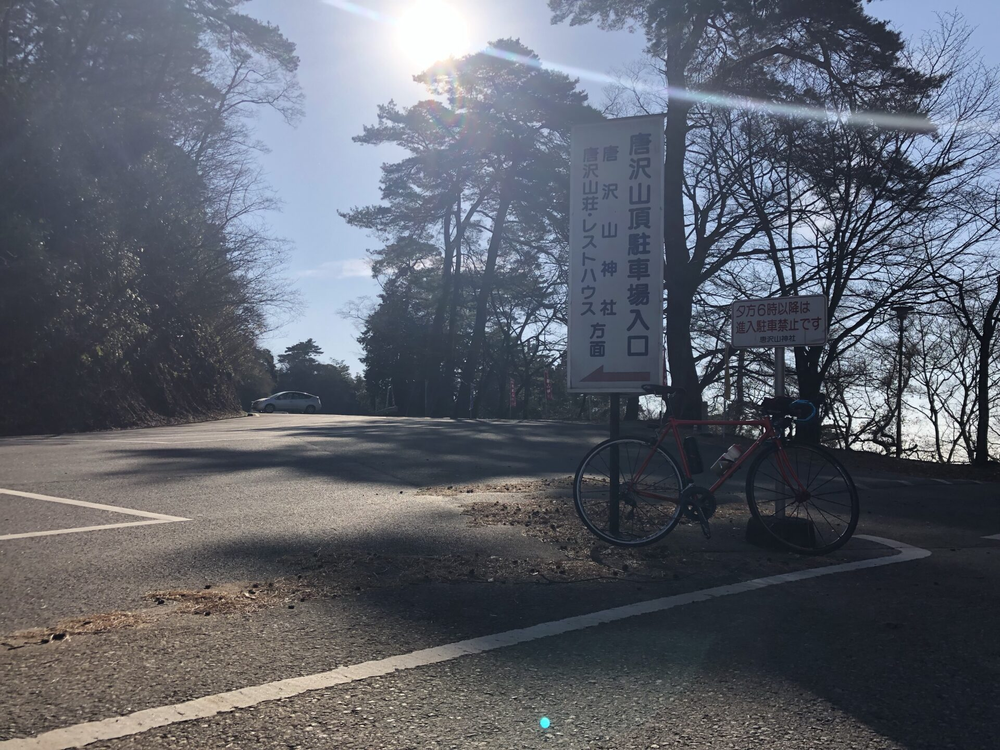
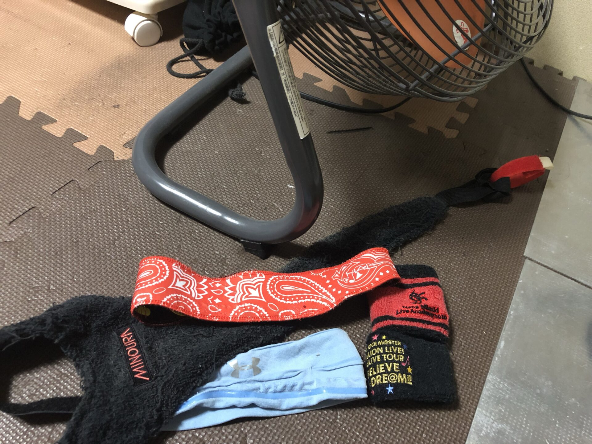
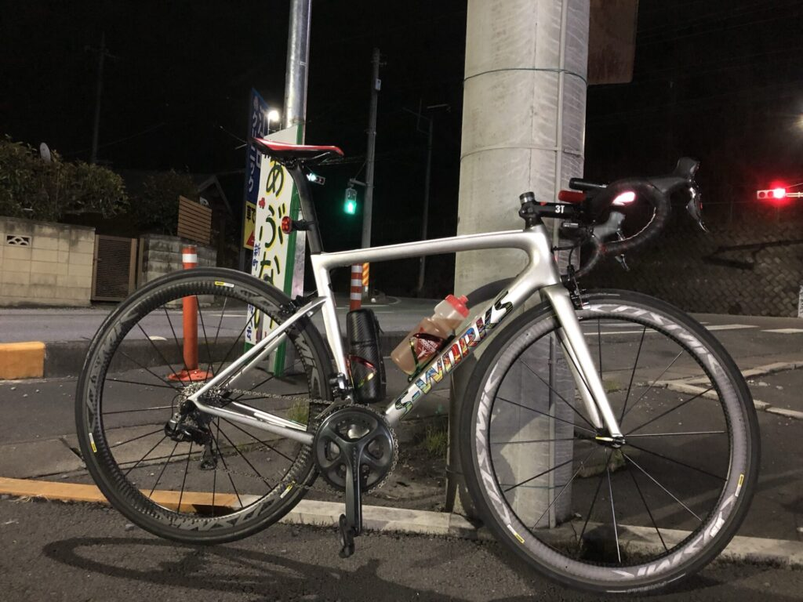
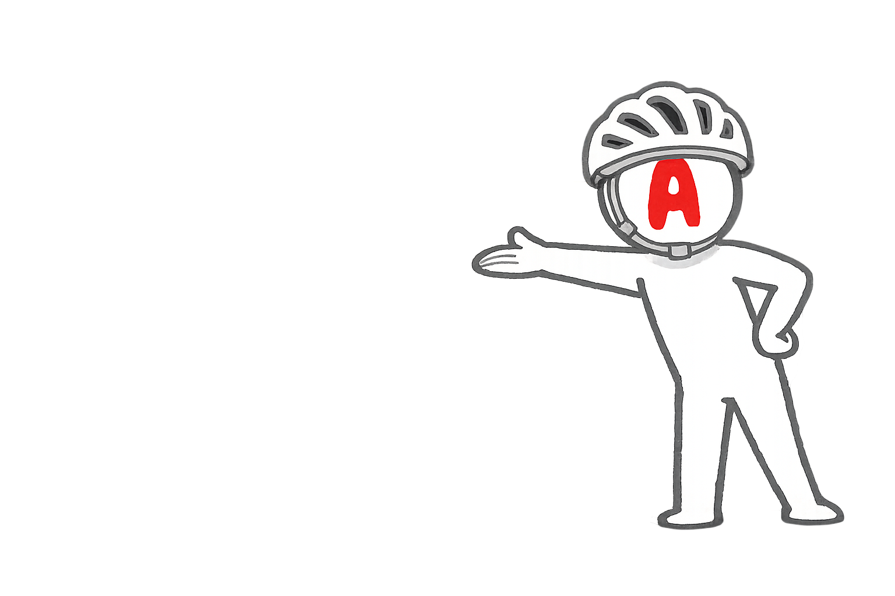
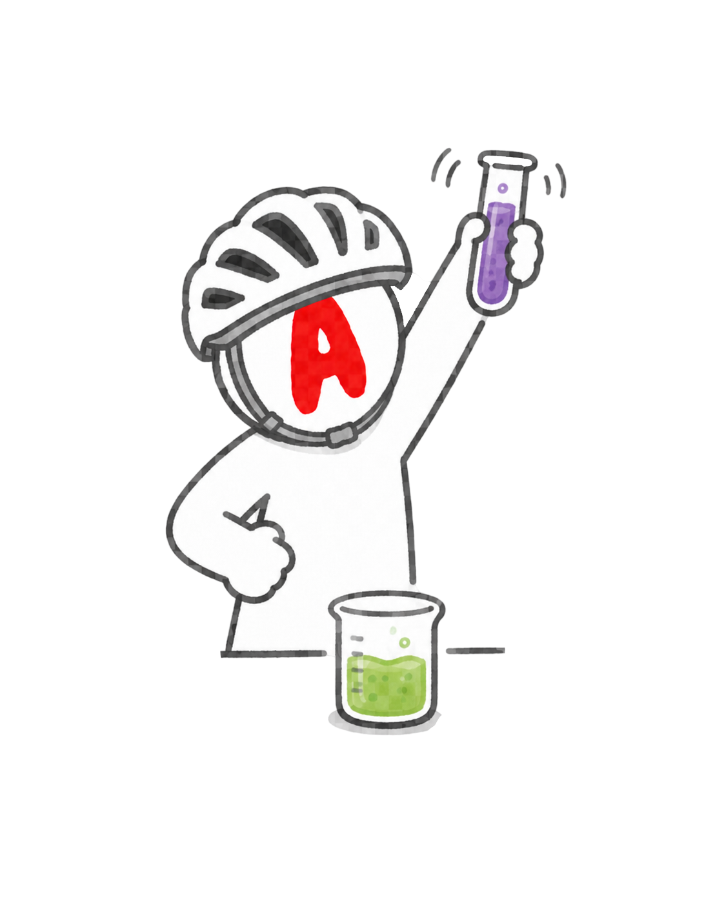
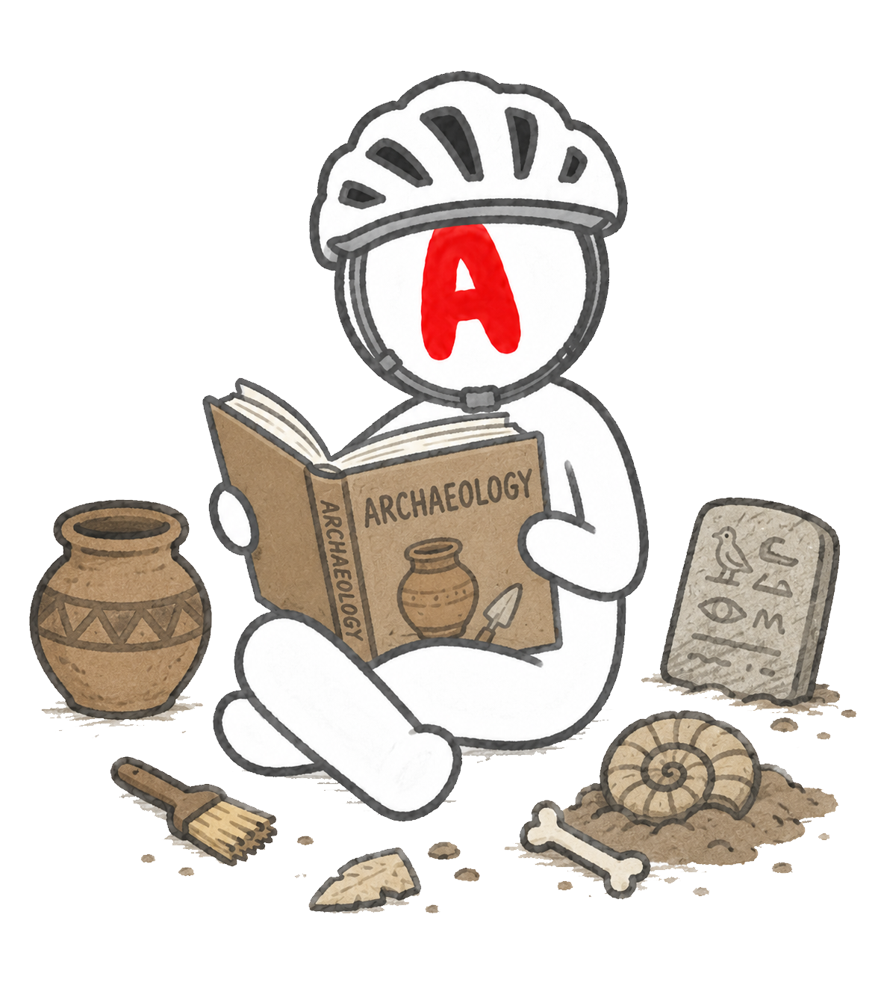

STORY
1時間8分の男は、
1時間8分の男は、
もう一度ゴールドを目指す。
-
2019
栄光
富士ヒルを1:08で駆け上がった。平均286W、当時67kg。
-
2023
再挑戦
もう一度走った富士ヒルは1:16。ゴールドは遠かった。
-
2024
空白
気づけば75kg。ロードバイクは部屋の隅に立てかけたまま。
-
2026
再起動
AIと喧嘩しながら、もう一度ゴールドリングへ。これはその実験ログ。
RECENT POSTS
最新記事
実験記事、検証、旧ブログ発掘を新しい順に並べます。


15分260W×2の予定が、なぜか270W×2になったローラー練習
20分285Wの翌日、今日は抑えるはずだった。結果は270W×2。そして最後に尻が負けました。
ローラー練習 / 15分走 / AI相談
20分285W。15分までは行けると思ったが、そこから地獄だった
Garminはリカバリーと言った。私はローラーの上でえづいていた。20分走で現在地を確認します。
ローラー練習 / FTP確認 / AI相談
旧ブログを掘り返したら、219本の記事と523枚の画像が出てきた
昔の自分の部屋を片付けるつもりが、ロードバイクの化石発掘現場になりました。
旧ブログ発掘 / AI相談
昔の富士ヒル追い込み論を、今の方針で読み直す
追い込みすぎない方針の根っこにある話。AIにもツッコませながら、昔の富士ヒル観を今の練習方針へつなぎ直します。
旧ブログ発掘 / 富士ヒル
脚が重いので、ご飯300g実験を開始した
脚に力が入らない感覚を、炭水化物不足の仮説で見ていく食事実験です。
食事実験 / 補給 / AI相談
Tarmac SL6を今読み直す。Aethos2で富士ヒルへ行く前に
2019年の実績と、今のAethos2をつなぐ機材リメイク。昔の機材感覚を今の目線で整理します。
旧ブログ発掘 / 機材
EXPERIMENTS
6つの実験
読者が興味のあるテーマから入れるように、まずはこの6つで始めます。

OLD LOGS
昔の記事を、今の脚とAIで読み直す
旧ブログ「ロードバイク時々マウンテン」からWayback Machineで記事を発掘しました。 メインではなく、必要な時に今の挑戦へ接続する素材庫として使います。
